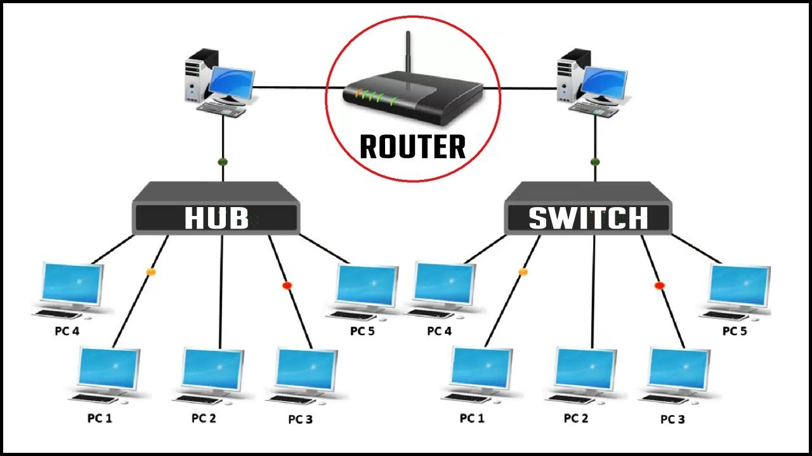
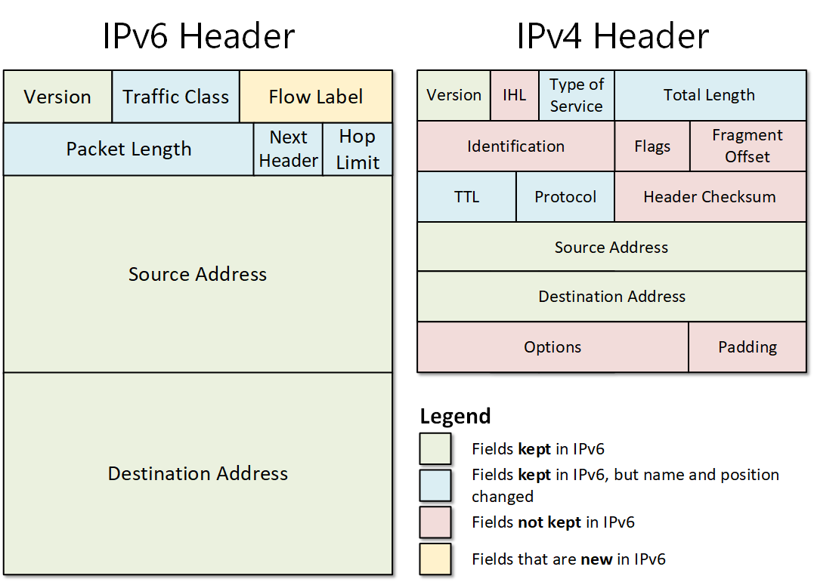

Redes de Computadores
Uma rede de computadores é um conjunto de dispositivos — computadores, smartphones, impressoras, servidores — conectados por meios físicos (cabos de cobre, fibra óptica) ou sem fio (Wi-Fi), de modo que possam trocar dados, compartilhar recursos e se comunicar. O principal objetivo de redes é permitir compartilhamento de informações e recursos, facilitar comunicação (e-mail, mensagens, arquivos), permitir uso de serviços remotos (servidores, armazenamento, web), e tornar possível o funcionamento de aplicações distribuídas.
O que é uma Rede mínima?

Quando falamos em “rede mínima”, pode-se imaginar o caso mais simples de rede de computadores: pelo menos dois dispositivos interligados por algum meio de comunicação — um cabo, um enlace sem fio — capazes de trocar dados. Esse tipo de rede já permite compartilhamento direto entre os nós, mesmo sem uma infraestrutura complexa. Em sua forma básica, a rede mínima basta para que dois computadores conversem, troquem arquivos ou compartilhem recursos.


O que é a internet?
A Internet é, em essência, a maior rede de computadores do mundo — é a interconexão de milhares ou milhões de redes menores (redes domésticas, LANs, redes de provedores, data centers), formando um sistema global que permite a comunicação entre praticamente qualquer ponto do planeta. O que compõe a internet inclui infraestrutura física (cabos de cobre, cabos de fibra óptica, links submarinos entre continentes), equipamentos de rede (roteadores, switches, modems, servidores), protocolos que padronizam a comunicação, e serviços/applicações como web, e-mail, streaming, etc.


O que é web?
A World Wide Web (web) é o conjunto de conteúdos, páginas, serviços e protocolos que rodamos sobre a infraestrutura da Internet — ou seja, a web é “o que vemos” da Internet. Por meio da web, acessamos sites, páginas, aplicações web, documentos, multimídia, etc. A web depende da rede global da Internet, mas não é sinônimo dela: a Internet é a infraestrutura; a web é uma camada de serviços sobre essa infraestrutura.


Mapa de fibra óptica.
Um mapa de fibra óptica global — ou especificamente de cabos submarinos e enlaces terrestres de backbone — mostra a espinha dorsal da Internet: os cabos de fibra óptica que atravessam oceanos e ligam continentes, interligando países e provendo a conectividade global. Esses cabos são a base física que torna possível a Internet mundial.
Componentes de uma rede wi-fi
Para montar uma rede Wi-Fi, são necessários componentes de hardware como: Uma placa de rede sem fio (NIC wireless), para o computador/dispositivo poder se conectar via rádio. Um roteador Wi-Fi ou um ponto de acesso (access point), que emite o sinal sem fio e gerencia a conexão dos dispositivos. Outras peças auxiliares podem incluir antenas, repetidores/ extensores ou adaptadores USB de Wi-Fi caso o computador não tenha Wi-Fi embutido. Esses componentes juntos formam a infraestrutura que permite comunicação sem fio dentro da rede, compartilhamento de internet, arquivos, recursos, etc.
Componentes de uma rede local com cabo de rede
Já para uma rede local cabeada (LAN), os componentes típicos são: Placas de rede Ethernet (NICs) nos computadores/dispositivos — para conectar via cabo. Cabos de rede (Ethernet), como cabos UTP (Cat5e, Cat6, etc) ou cabos de fibra em redes mais robustas. Dispositivos de interconexão como switches (comutadores), que conectam múltiplos dispositivos dentro da rede local e encaminham pacotes de forma eficiente. Painéis de conexão (patch panels), racks, conectores RJ45 — componentes típicos de cabeamento estruturado — quando a rede é mais organizada.

Protocolo de comunicação
Um protocolo de comunicação em redes de computadores é um conjunto de regras e convenções que definem como os dados devem ser estruturados, transmitidos, recebidos e interpretados entre dispositivos diferentes. Isso inclui como os dados são divididos em pacotes, como os pacotes são endereçados, como erros são detectados e corrigidos, como os dispositivos sincronizam o envio/recebimento, entre outros aspectos. Por exemplo, na pilha de protocolos moderna, temos protocolos que cuidam do transporte confiável (como TCP), endereçamento e roteamento (como IP), e protocolos de aplicação para serviços como web, e-mail, transferência de arquivos, entre outros. Sem protocolos, dispositivos de diferentes fabricantes ou sistemas operacionais teriam dificuldade de “entender” uns aos outros — os protocolos garantem interoperabilidade.
Modelo OSI
O modelo Modelo OSI (Open Systems Interconnection) é um padrão de referência teórico que divide a comunicação em redes em sete camadas, cada uma com funções específicas: física, enlace de dados, rede, transporte, sessão, apresentação e aplicação. A ideia do modelo OSI é padronizar a forma como sistemas diferentes se comunicam, definindo responsabilidade de cada camada: da transmissão física de bits até semântica dos dados, formatos, encriptação, confiabilidade, interface com aplicações de usuário. Embora o modelo OSI seja mais conceitual e raramente implementado literalmente em pilhas de rede modernas, ele é muito útil didaticamente para compreender, projetar e diagnosticar redes.
Modelo TCP/IP
O Modelo TCP/IP é o conjunto de protocolos usados na prática na Internet e em grande parte das redes modernas. Ele organiza a comunicação em quatro camadas: Application (Aplicação), Transport (Transporte), Internet (Rede/Inter-Rede) e Network Access (Acesso à Rede / Física/Enlace). Enquanto o OSI é um modelo de referência, o TCP/IP é amplamente implementado. A camada Application lida com serviços como web, e-mail, transferência de arquivos; a camada Transport assegura entrega confiável ou rápida (TCP ou UDP); a camada Internet trata endereçamento e roteamento (via IP); e a camada de Acesso à Rede cuida da transmissão física dos dados (Ethernet, Wi-Fi, etc). Esse modelo é a base técnica da Internet que usamos hoje, robusto, padronizado e compatível globalmente.
Protocolo IP V4 e o IP V6
O IPv4 (Internet Protocol version 4) é a versão antiga e mais difundida do protocolo de endereçamento e roteamento da Internet. Ele usa endereços de 32 bits, o que permite cerca de 4,3 bilhões de endereços únicos — o que se tornou insuficiente diante da expansão global da Internet. Para resolver o problema da escassez de endereços e trazer melhorias, foi criado o IPv6 — a versão mais recente do protocolo IP — que usa endereços de 128 bits, oferecendo um espaço de endereçamento vastamente superior e outros benefícios como roteamento mais eficiente e suporte a novos tipos de serviços. Ambos os protocolos fazem parte do conjunto de protocolos usados na Internet, proporcionando identificação, endereçamento e roteamento de pacotes entre dispositivos, porém o IPv6 vem gradualmente substituindo o IPv4 conforme a necessidade de mais endereços cresce.

Configuração IP e o TCP em uma programação backend com node.js
Em uma programação backend com Node.js, configurar “IP e TCP” normalmente significa criar um servidor que escuta requisições através de um endereço IP e porta TCP — comportando comunicação via TCP/IP como base para protocolos de mais alto nível (HTTP, WebSocket, etc.). Por exemplo, usando Node.js você pode configurar um servidor HTTP simples, que internamente utiliza a pilha TCP/IP para transmitir dados sobre a rede. O desenvolvedor geralmente não manipula diretamente aspectos de “camada de rede” (endereçamento, roteamento) — isso fica a cargo do sistema operacional e da infraestrutura da rede — mas define portas, permite conexões entrantes, define quais serviços estarão acessíveis. Assim, ao programar backend, você interage com a camada de aplicação, mas infrasestras das camadas Internet/Transporte já estão ativas e gerenciando o tráfego.
Protocolo HTTP
O HTTP (HyperText Transfer Protocol) é o protocolo que define como os dados devem ser transmitidos na Web — é o padrão de comunicação entre navegadores (clientes) e servidores web. Ele especifica como as requisições (GET, POST, etc.) são feitas, como as respostas são formatadas, como os dados são estruturados e transferidos, permitindo a exibição de páginas, carregamento de recursos, envio de formulários, APIs, etc. Basicamente, sempre que você digita um endereço no navegador (URL) e pressiona Enter, seu navegador faz uma requisição HTTP ao servidor que hospeda o site, que responde com o conteúdo a ser exibido — texto, imagens, scripts, etc.
HTTPS
HTTPS é a versão segura do HTTP — ou seja, HTTP sobre criptografia, normalmente usando SSL/TLS. Através do HTTPS, a comunicação entre cliente e servidor é criptografada, garantindo confidencialidade, integridade e autenticidade dos dados trocados. Isso protege contra interceptações, espionagem e modificações maliciosas. Ao usar HTTPS, o navegador indica que a conexão é segura (cadeado, “https://” na URL), e os dados trafegam de forma protegida. Em praticamente todos os sites hoje que lidam com dados sensíveis (login, senhas, formulários, transações), o HTTPS é obrigatório para segurança.
Framework para programação do protocolo HTTP com uso do node.js
Um exemplo de framework para programação de serviços HTTP com Node.js é o Express.js — é um framework minimalista e flexível para aplicações web em Node.js, utilizado para criar servidores HTTP, APIs REST, rotas, middleware, tratamento de requisições/respostas etc. Com Express.js, você define rotas, endpoints, manipula requisições POST/GET, envia respostas, integra com bancos de dados, middlewares de segurança, autenticação, entre outros — tudo isso rodando sobre a pilha TCP/IP e protocolos HTTP/HTTPS. Ele facilita bastante o desenvolvimento backend moderno, com simplicidade e produtividade.
Código Backend para troca de mensagens entre front e backend
Exemplo 1:
const express = require('express')
const app = express()
const cors = require('cors')
// PORT do TCP
const PORT = 3000
// endereço IP = 127.0.0.1 do servidor de teste
const hostname = 'localhost'
// ------------ Middleware ---------------------
app.use(express.urlencoded({extended: true}))
app.use(express.json())
app.use(cors())
// ---------------------------------------------
app.get('/', (req,res)=>{
res.status(200).json({message: 'Aplicação Rodando!'})
})
app.get('/login', (req,res)=>{
const email_bd = 'carlos@gmail.com'
const senha_bd = 123
const dados = {
email: email_bd,
senha: senha_bd
}
res.status(200).json(dados)
})
app.post('/login', (req,res)=>{
const email_bd = 'carlos@gmail.com'
const senha_bd = 123
const valores = req.body
console.log(valores)
if(email_bd === valores.email){
if(senha_bd === valores.senha){
return res.status(200).json({
message: 'login realizado com sucesso!',
nome: valores.nome,
statusLog: 'true'
})
}else{
return res.status(403).json({ message: 'Acesso não autorizado!'})
}
}else{
return res.status(404).json({message: 'Usuário não encontrado'})
}
})
// ---------------- Server ---------------------
app.listen(PORT, hostname, ()=>{
console.log(`http://${hostname}:${PORT}`)
})
Exemplo 2:
const express = require('express')
const app = express()
const cors = require('cors')
const PORT = 3000 // endereço TCP
const hostname = 'localhost' // 127.0.0.1 endereço IP
// --------- middleware ------------------------
app.use(express.urlencoded({extended: true}))
app.use(express.json())
app.use(cors())
// ---------------------------------------------
app.get('/', (req,res)=>{
res.status(200).json({message: 'aplicação rodando'})
})
app.get('/teste', (req,res)=>{
const nome = 'Ueslei'
res.status(200).json({message: 'mensagem do nome:', nome})
})
app.post('/usuario', (req,res)=>{
const valores = req.body
console.log(valores)
res.status(200).json({message: 'dados recebidos!'})
})
// --------------------------------------------
app.listen(PORT,hostname, ()=>{
console.log(`Servidor http://${hostname}:${PORT}`)
})
Exemplo 3:
const express = require('express')
const app = express()
const cors = require('cors')
const PORT = 3000
const hostname = 'localhost' // ip = 127.0.0.1 - servidor de teste
// ------- config middleware -----------------
app.use(express.urlencoded({extended: true}))
app.use(express.json())
app.use(cors())
// -------------------------------------------
app.post('/usuario', (req,res)=>{
const dados = req.body
console.log('nome:', dados)
res.status(200).json({message: 'dados recebidos ', dados})
})
app.get('/', (req,res)=>{
res.status(200).json({message: 'Olá mundo!'})
})
// ------------- Server ----------------------
app.listen(PORT, hostname, ()=>{
console.log(`Servidor rodando em http://${hostname}:${PORT}`)
})